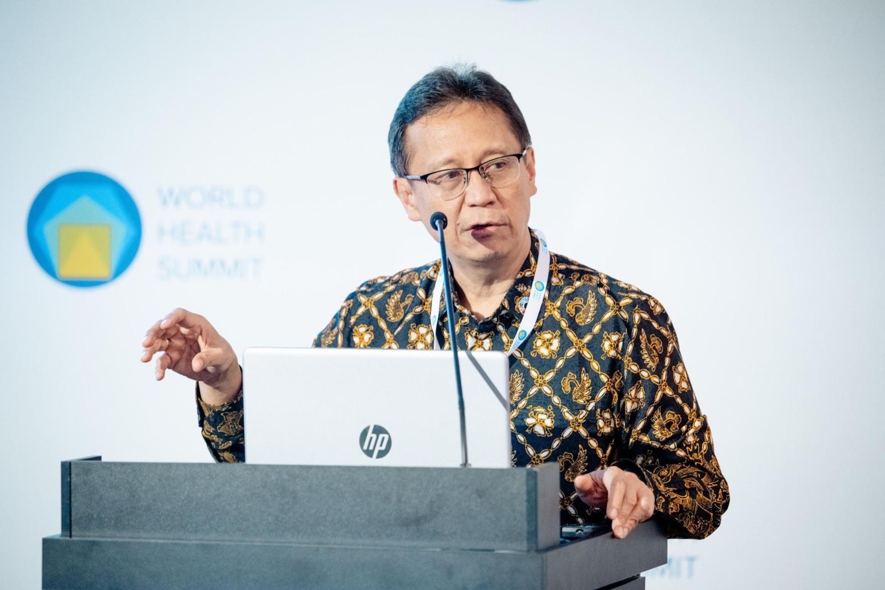
World Health SummitEvidence-Based Health Workforce Planning for Indonesia
At the World Health Summit in Berlin, Minister Budi Gunadi Sadikin shares how Indonesia used epidemiological projections to plan its health workforce.
A WHO that listens, responds and delivers, with countries and for people.
Budi Gunadi Sadikin has served as Indonesia’s Minister of Health since December 2020. Appointed at the height of COVID-19, he led one of the world’s largest vaccination programmes and turned emergency response into a mandate for long-term health-system reform.
Surat resmi Kementerian Kesehatan Republik Indonesia untuk Dewan Eksekutif Organisasi Kesehatan Dunia, tanggal 13 November 2026, menjawab tujuh pertanyaan penting dari Koalisi Kesehatan Keadilan Indonesia.
Routine rotations of civil servant physicians are conducted strictly under national regulations to address specialist distribution gaps across Indonesia, not as disciplinary measures against policy critics.
Under the 2023 Health Law, health professional collegiums have been granted greater transparency and public accountability, with ongoing regulatory revisions to align fully with the Constitutional Court's ruling.
Introduced to address a projected shortage of 65,000 specialists by 2032, this pathway complements university-based training by expanding access and financial support for doctors from underserved regions while upholding national and international accreditation standards.
Sensitive genomic data is strictly safeguarded under Ministerial Decree No. 512/2025, ISO/IEC 27001:2022 standards, encryption, and a Trusted Research Environment (TRE) that prevents unauthorized external downloads.
Ministry-run vertical hospitals reinvest revenues directly into cross-subsidies for underprivileged and national health insurance (JKN) patients, while centralized procurement has generated over Rp1.8 trillion in medicine and medical device efficiencies.
The Ministry maintains transparent, real-time surveillance and emergency medical deployment across disaster responses, including the 2026 East Nusa Tenggara earthquake, forest fire respiratory care, and strict hygiene enforcement for the Free Meal Program (MBG).
WHO Executive Board Resolution EB97.R10 evaluates candidates based on leadership, management, and capacity to fulfill the Director-General's mandate. Minister Budi Gunadi Sadikin's proven track record in leading large-scale institutional transformations, national health reforms, and global health diplomacy provides the multidisciplinary stewardship required for the future of WHO.
A world where everyone can live a long and healthy life, with the care they need, when and where they need it, at a cost they can afford.
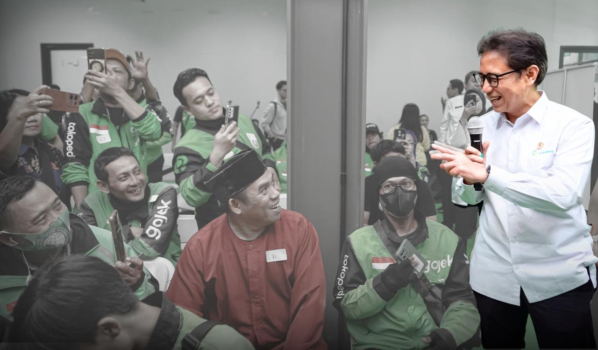
To refocus WHO on its core mandates, grounded in science, use its convening power to align partners behind country-led health priorities, and strengthen the Organisation from within by making its financing more predictable, placing staff where their expertise is most needed, and improving internal coordination so WHO can respond more quickly and effectively to countries’ needs.
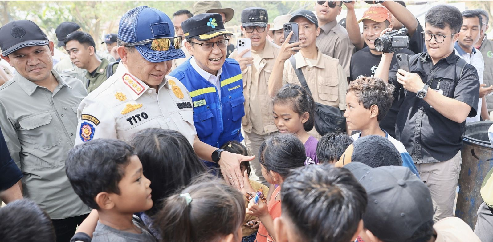
WHO that delivers on its core responsibilities.
WHO will focus on its core mandates, setting norms and standards grounded in science and helping countries put that evidence into practice through technical support.
Invest in WHO’s scientific expertise. Sustain scientific work where public health needs are greatest, give scientific teams the support they need and ground WHO’s decisions, norms and standards in their scientific evidence.
Help countries put evidence into practice. Provide technical support to help countries adapt WHO guidance to their national contexts and apply it in health policy, public health programmes and clinical practice.
Strengthen governance and responsible use of emerging technology. Help countries navigate rapid advances in artificial intelligence, biotechnology and genomics through clear governance frameworks, responsible data management, and open standards for interoperable health systems, so these technologies improve care and expand access to affordable innovation.
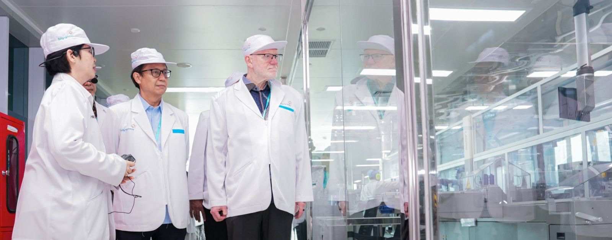
WHO that brings countries and partners together around country priorities.
Countries’ health sovereignty must be at the heart of global health cooperation. WHO will bring governments and partners together behind country-led priorities, a shared plan and measurable outcomes. It will help align contributions, mobilize domestic financing and ensure external support complements national efforts, with clear accountability for results.
Advance UHC across the life course. Help countries strengthen prevention, primary care and timely referral, supported by trained health workers, so everyone can access quality care without financial hardship, with attention to women’s and children’s health and prevention and management of NCDs, including mental health.
Improve equitable access to affordable health products. Convene countries and partners to advance pooled procurement and market shaping, strengthen regulatory cooperation and expand local manufacturing through technology transfer.
Strengthen health security. Convene national authorities and partners to detect and control outbreaks by strengthening cross-border surveillance, laboratory networks and information sharing, with safeguards for data sovereignty and equitable benefit-sharing, support countries’ climate-resilient health plans, especially in small island states, and sustain essential care through disasters, conflict and displacement with agreed complementary roles for WHO and partners.
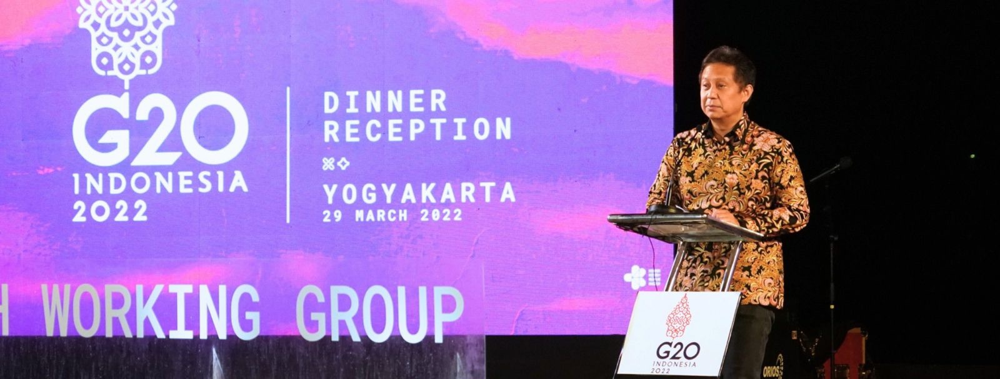
WHO that is equipped to deliver and accountable for results.
WHO works best when its people have clear responsibilities, the authority to act and the resources to deliver. WHO will strengthen teamwork and coordination across headquarters, regional offices and country offices so they can serve countries more effectively as One WHO.
Appoint on merit. Select leaders, technical experts, and WHO Representatives based on competence, integrity and ability to deliver, while advancing equal opportunities for women in recruitment and leadership.
Improve accountability for performance and conduct. Set clear performance indicators, review progress regularly, hold managers accountable for results and address misconduct fairly and promptly.
Strengthen WHO’s financial sustainability. Broaden WHO’s funding base and show transparently how resources are used and what they achieve.
More than 453 million vaccine doses, genomic surveillance expanded from 16 to 41 laboratories, and 5,000 tonnes of oxygen delivered to 500 hospitals during the Delta surge.
Including US$4 billion for a government-led programme equipping over 10,000 primary facilities, 500 public-health laboratories and 600 hospitals.
Integrated Primary Care across more than 10,000 centres and 300,000 community posts; free annual health screening reached 100 million people in its first 15 months.
All 87 hospitals affected by the 2025 Sumatra floods were restored within two weeks. After the 2026 East Nusa Tenggara earthquake, two field hospitals were operational within four days.

Experience spanning national reform, multilateral diplomacy, finance, technology and large-scale institutional leadership.
Leads Indonesia’s health system transformation across primary care and prevention, referral services, resilience, financing, workforce, and health technology, anchored in a new Health Law that consolidated 11 fragmented laws into one.
Bridges health, finance and political leaders to deliver complex reforms, demonstrated internationally through G20 leadership that culminated in the establishment of the Pandemic Fund, and locally through building coalitions with 9 parliamentary parties and 115 public consultations engaging more than 1,200 stakeholders in the development of Indonesia’s Health Law.
Applies financial discipline and accountable delivery to public institutions, using centralised procurement to save US$553 million on advanced medical devices and 32% on selected medicines and consumables.
Champions science and evidence to strengthen public health, driving digital transformation and the responsible use of artificial intelligence while investing in prevention, genomic surveillance, digital systems, local manufacturing, and next-generation vaccines to build resilience before the next crisis.
Helped unite health and finance leaders around a fund launched with US$1.4 billion from 24 donors. By February 2026, it had built a portfolio of 67 projects across 128 countries and catalysed more than US$10 billion.
Championed the ASEAN Leaders’ Declaration on One Health, followed by a regional network and joint action plan for 2023–2030.
Co-chairing work to move from fragmented, externally driven arrangements toward country agency, sustainable financing and collective provision of global public goods.
“His vision for WHO is grounded in equity, solidarity, innovation, accountability, and sustainable financing.”
H.E. Prabowo SubiantoPresident of the Republic of Indonesia“He is the kind of person who can bring together people from different backgrounds, build strong momentum, and develop strategies and systems to achieve lasting results.”
Dr Yohei SasakawaWHO Goodwill Ambassador for Leprosy Elimination; Honorary Chair, The Nippon Foundation“What distinguishes Minister Sadikin is his combination of public-health leadership, financial acumen and experience in managing large institutions. He understands that sustainable health progress must be nationally owned, adequately financed and supported by strong regional and international cooperation.”
H.E. Olusegun ObasanjoFormer President of the Federal Republic of NigeriaOfficial statements, campaign updates and selected coverage on global health leadership.

World Health SummitAt the World Health Summit in Berlin, Minister Budi Gunadi Sadikin shares how Indonesia used epidemiological projections to plan its health workforce.
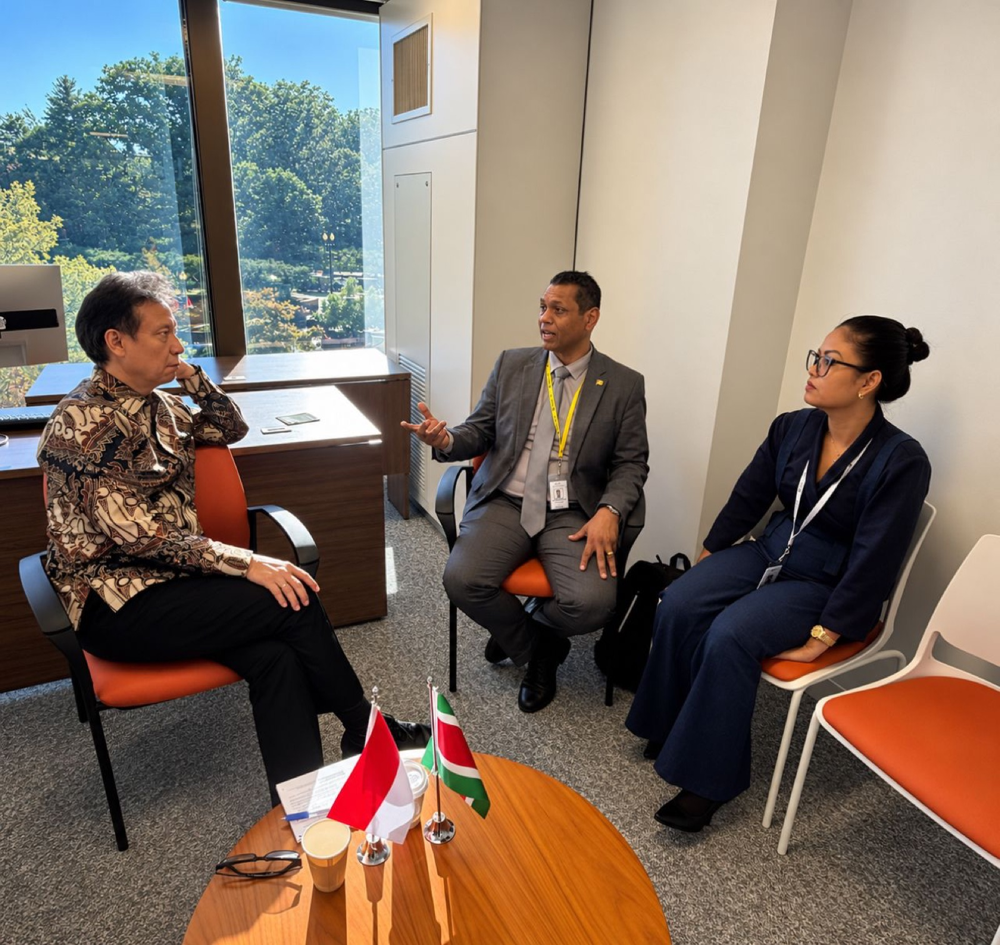
PAHOOn the sidelines of the 63rd PAHO Directing Council in Washington, D.C., Minister Budi Gunadi Sadikin explores deeper health cooperation with Suriname.
 World Health Summit
World Health SummitAt the World Health Summit 2026, Minister Budi Gunadi Sadikin shares his vision for a WHO focused on science-based standards and stronger country ownership.
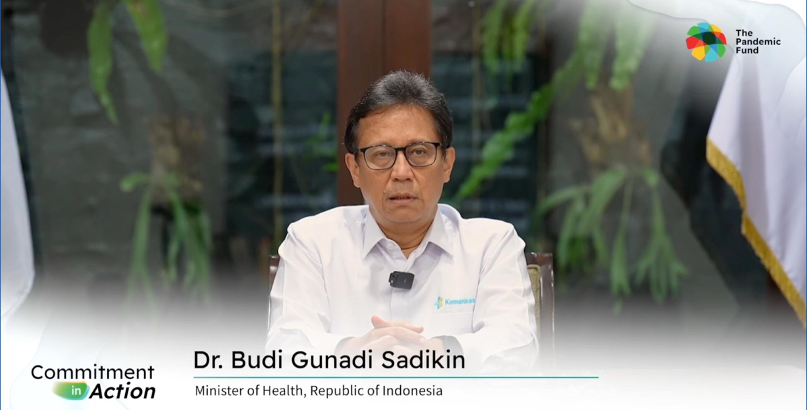
The Pandemic FundIndonesia co-invests nearly US$228 million in the Pandemic Fund project to strengthen global pandemic preparedness through a One Health approach.
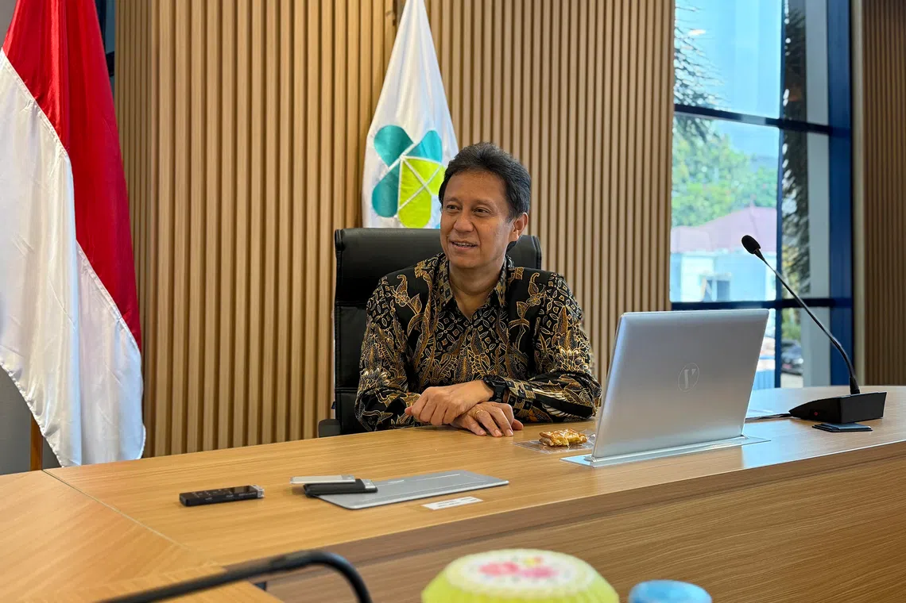
The Straits TimesAn exclusive interview with The Straits Times on Minister Budi Gunadi Sadikin's vision to bring a South-east Asian perspective and financial reform to the WHO.
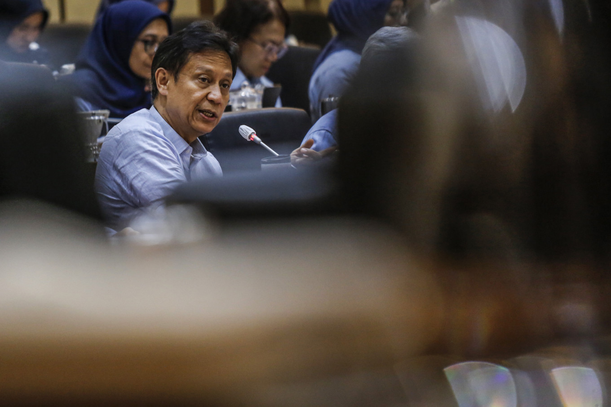
The Jakarta PostThe Jakarta Post’s editorial board outlines why Indonesia must mobilize its highest diplomatic channels to back Minister Budi Gunadi Sadikin’s bid for the WHO top post.
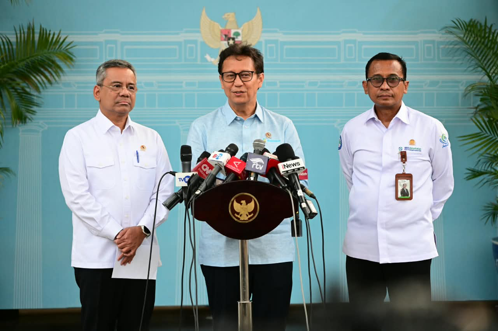
PAHOOfficial briefing on streamlining national health insurance services and ensuring equitable healthcare access at the State Palace.
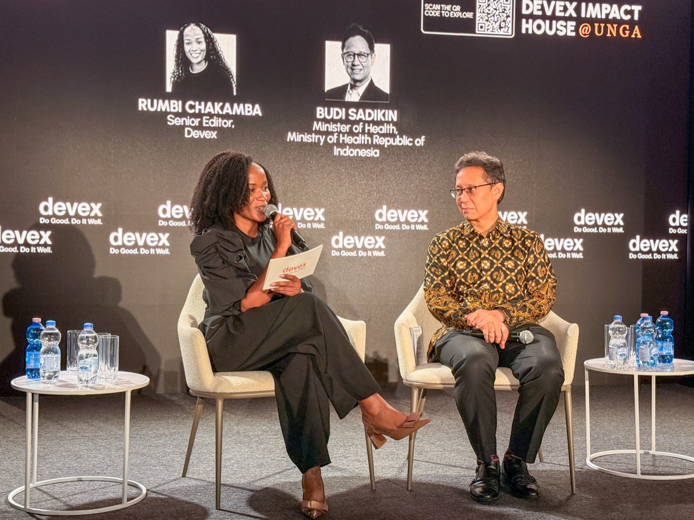
Devex Impact HouseAt Devex Impact House during UNGA, Minister Budi Gunadi Sadikin shares why global health needs leadership that connects science with financing.
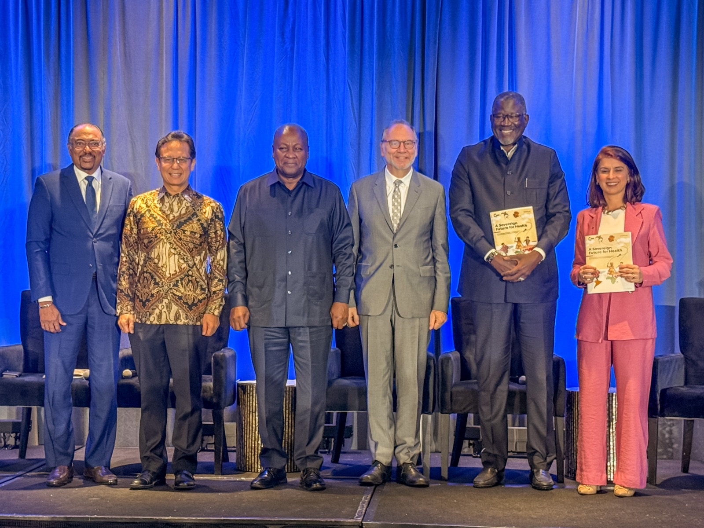
Accra ResetFull Circle convening, sidelines of UNGA 81 · New York · 21 September 2026
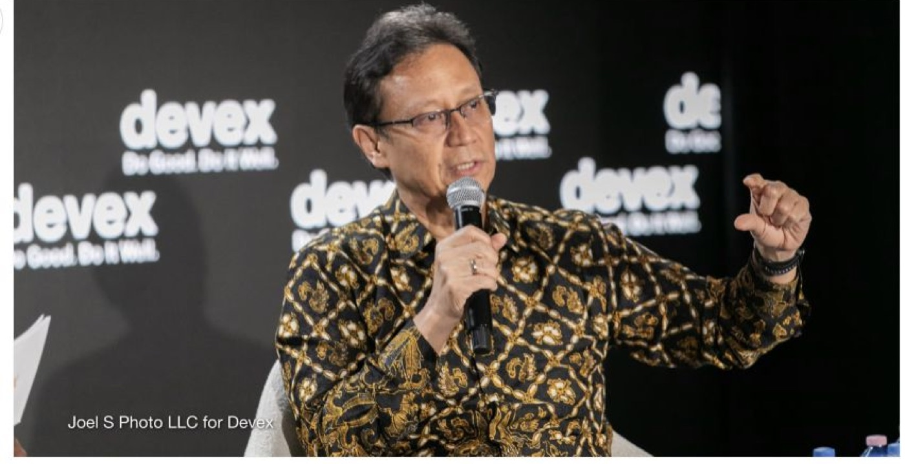
Devex Impact HouseA strategic brief on global health financing reform and equity initiatives by Minister Budi Gunadi Sadikin.
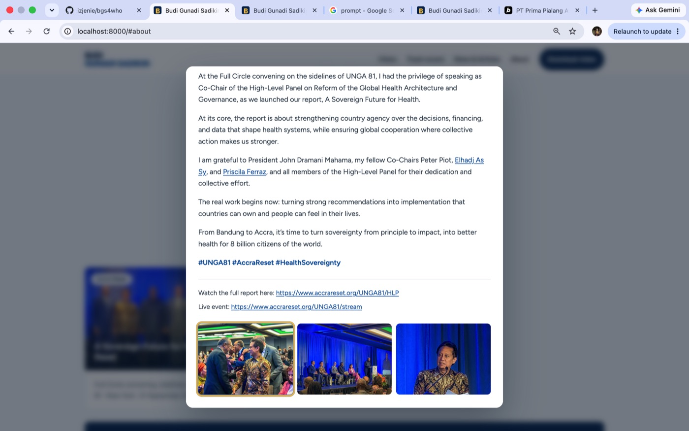
AVPNWatch Indonesia’s Health Minister, H.E. Budi Gunadi Sadikin, share his global vision on prioritizing preventive care and extending global life expectancy at the AVPN Global Conference.
Official updates will be available here soon.
Read first-hand updates on health-system transformation, international cooperation and the campaign for WHO Director-General.
View LinkedIn profile ↗Budi enjoys running and good food, embracing a healthy life that is enjoyable and fulfilling. At 60 he completed his first marathon in Berlin, followed by London in 2026. In Jakarta, he runs with communities including runners with visual impairments, and shares practical guidance to help millions exercise, eat and sleep well.
2020–present · Minister of Health
Led Indonesia’s COVID-19 response and six-pillar health transformation.
2019–2020 · Vice Minister of State-Owned Enterprises
Oversaw 64 enterprises across strategic sectors.
2017–2019 · Group CEO, MIND ID / President Director, Inalum
Led the US$3.85 billion Freeport Indonesia divestment.
2013–2016 · President Director, Bank Mandiri
Led Indonesia’s largest bank, with nearly 2,500 branches and 100,000 personnel.
Accra Reset · Co-Chair, High-Level Panel on Reform of the Global Health Architecture and Governance
Gavi · Board Member representing Western Pacific and South-East Asia
TB Vaccine Accelerator Council · Co-Chair
Stop TB Partnership · Board Member
The Lancet · Commissioner on Health System Performance Assessment
B.Sc., Physics
Bandung Institute of Technology, 1988
“I would lead a WHO that listens, responds and delivers, with countries and for people, so that everyone can live a long and healthy life.”
Budi Gunadi Sadikin · Candidate for Director-General of the World Health Organization, 2027–2032
Download the complete vision booklet(21/09/26, New York) -- A year ago, the Accra Reset was a call for change. Today in New York, the question is harder: how do we make that change work in practice?
For me, this moment carries a special meaning. Bandung is where I spent my university years and where I met my wife. But the world remembers Bandung for something much larger. In 1955, leaders from Asia and Africa gathered there to affirm political sovereignty—the right of countries to shape their own future. Today, that same spirit is being carried forward: from political sovereignty to health sovereignty.
At the Full Circle convening on the sidelines of UNGA 81, I had the privilege of speaking as Co-Chair of the High-Level Panel on Reform of the Global Health Architecture and Governance, as we launched our report, A Sovereign Future for Health.
At its core, the report is about strengthening country agency over the decisions, financing, and data that shape health systems, while ensuring global cooperation where collective action makes us stronger.
I am grateful to President John Dramani Mahama, my fellow Co-Chairs Peter Piot, Elhadj As Sy, and Priscila Ferraz, and all members of the High-Level Panel for their dedication and collective effort.
The real work begins now: turning strong recommendations into implementation that countries can own and people can feel in their lives.
From Bandung to Accra, it’s time to turn sovereignty from principle to impact, into better health for 8 billion citizens of the world.
Watch the full report here: https://www.accrareset.org/UNGA81/HLP
Live event: https://www.accrareset.org/UNGA81/stream
Watch Indonesia’s Health Minister, H.E. Budi Gunadi Sadikin, share his global vision on prioritizing preventive care and extending global life expectancy at the AVPN Global Conference.
source: AVPN Youtube
As the candidate for the World Health Organization’s Director-General, Minister Budi Gunadi Sadikin highlights the critical need to reform global health financing and governance. This briefing outlines strategic paths to bridge funding gaps and enhance equity for 8 billion citizens worldwide.
Source: Kieran B. LinkedIn
(28/09/2026, Jakarta) -- After a full week at UNGA, I returned to Jakarta and went straight back to work.
At the Merdeka Palace, President Prabowo Subianto brought together the Minister of Finance, the President Director of Indonesia’s National Health Insurance Agency, and me to discuss the future of our national health insurance programme. For a country of more than 280 million people, universal health coverage is a promise that families can get the care they need without being driven into financial hardship. Keeping that promise means making the system stronger and financially sustainable for the years ahead.
Tomorrow, I leave for Washington, D.C., to attend the 63rd Directing Council of the Pan American Health Organization (PAHO) and the 78th Session of the Regional Committee of WHO for the Americas. I look forward to listening to Member States from across the Americas and exchanging practical lessons on how countries are strengthening universal health coverage.
Every country’s path is different. But we can learn from one another as we work towards the same goal: healthy, long lives for all.
Photo credit: Biro Pers, Media, dan Informasi Sekretariat Presiden
Source: Originally published on Budi Gunadi Sadikin’s Official LinkedIn Channel.
The Jakarta Post’s editorial board highlights that securing the top post demands proactive, state-level lobbying. While Minister Budi Gunadi Sadikin’s solid track record in steering systemic reforms is undeniable, individual competence alone is not enough. Indonesia must fully leverage its diplomatic apparatus.
Source: Editorial Board, The Jakarta Post (Published on September 30, 2026).
As the only South-east Asian candidate among six contenders for the next WHO Director-General, Minister Budi Gunadi Sadikin advocates for a massive shift toward country-led healthcare priorities and robust financial management. Leveraging his background as the former President Director of Bank Mandiri, he highlights that the WHO's current funding squeeze demands extraordinary financial expertise alongside global medical norms. His mission aims to extend his impact from managing health for 280 million Indonesians to serving 8 billion global citizens.
Source: Hariz Baharudin & Wahyudi Soeriaatmadja, The Straits Times (Published on September 30, 2026).
Indonesia co-invests nearly US$228 million in the Pandemic Fund project to strengthen global pandemic preparedness through a One Health approach.
Source: The Pandemic Fund X Official Page
(22/09/2026, New York) -- At Devex Impact House during the United Nations General Assembly, one question stood out: what kind of leadership does global health need?
The world has changed. Resources are tighter, challenges are more complex, and countries are asking for a global health system that delivers differently. In conversations with health ministers and Member States, I hear a clear message: they want a WHO that is more responsive to countries, more focused on results, and better equipped to navigate financial and operational constraints.
I’ve been listening to the advice on what this moment demands from the next generation of WHO leadership. As I said during the discussion: “These situations are different, unconventional situations that WHO is facing, and maybe an unconventional person like me is suitable.”
It is about bringing different capabilities to the challenge; connecting science with financing and mobilizing resources.
Source: Budi Gunadi Sadikin’s Official LinkedIn Channel.
World Health SummitExchanged perspectives with fellow prospective WHO Director-General candidates at “The Future of WHO and the Global Health Architecture: In Conversation with Prospective Candidates for WHO Director-General” a few days ago at the World Health Summit 2026.
I believe WHO must focus on its core role: setting science-based standards, bringing countries together, and providing technical support based on their needs. As external health funding declines, countries must take greater responsibility for their health priorities and manage the transition to domestic funding carefully.
WHO Reform must also strengthen collaboration with development banks, regional institutions, and other health agencies to ensure a more coordinated global response.
Many thanks to everyone for a thoughtful and fruitful discussion.
Source: Budi Gunadi Sadikin’s Official LinkedIn Channel.
Reflecting back to several meetings I had during the 63rd PAHO Directing Council in D.C, I met with Dr. Rakesh Gajadhar Sukul, Permanent Secretary of Health for Suriname to explore opportunities to strengthen our health cooperation.
With a pressing shortage of nurses and specialist doctors, Suriname sees potential in Indonesia’s healthcare workforce, alongside collaboration in telehealth, teleradiology, and AI-enabled healthcare.
Our longstanding cultural ties, including Suriname’s Javanese heritage, provide a strong foundation for deeper partnership.
We also discussed how WHO can better connect countries with practical solutions to address health-system challenges.
I believe global health cooperation must translate into tangible support that responds to countries’ real needs.
Source: Budi Gunadi Sadikin’s Official LinkedIn Channel.
As a banker for 30 years, it’s easy to say I love numbers. But numbers only matter when they help us make better decisions.
At the World Health Summit in Berlin, during Future Health Scenario Platform - Informing Policy Choice Through Quantitative Modeling, I shared how Indonesia partnered with Institute for Health Metrics and Evaluation (IHME) to strengthen evidence-based health workforce planning.
Indonesia had around 180,000 doctors, but lacked a comprehensive national plan to anticipate future workforce needs. Together with IHME, we developed the National Health Workforce Planning 2023–2032, using epidemiological projections to estimate how many health workers we would need, which specializations to prioritize, and where they should be deployed as our population and disease burden evolve.
This approach helps us move from reacting to shortages to anticipating future needs. We now aim to apply the same principles to other critical areas, including hospitals, medical devices, and medicines.
Our goal is to build a health system that serves all Indonesians, across more than 7,000 inhabited islands, and helps people live longer and healthier lives.
Grateful to share this discussion with Christopher J.L. Murray, Ximena Aguilera, Jane Halton AO PSM FAICD, and Stein Emil Vollset, fellow global health leaders in exploring how data and long-term forecasting can shape better policies and stronger health systems for the future.
Source: Budi Gunadi Sadikin’s Official LinkedIn Channel.
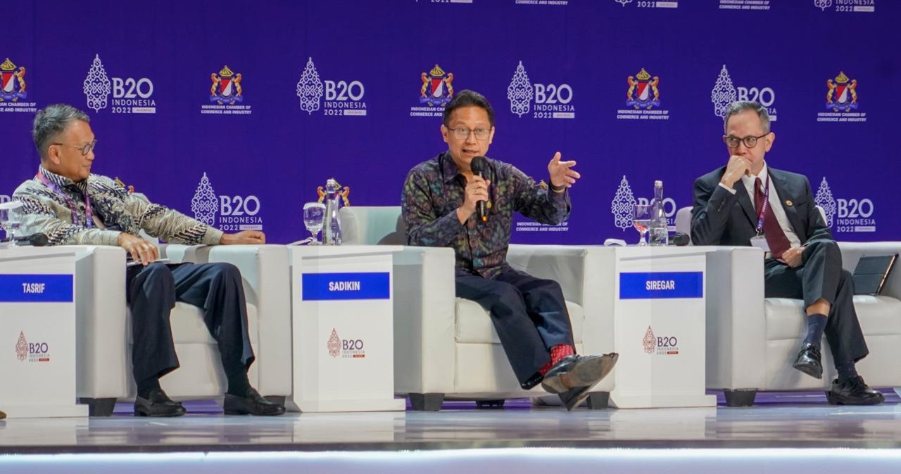
BALI · November 2022During Indonesia’s 2022 G20 Presidency, Minister Budi led the health track and worked alongside Indonesia’s Minister of Finance, Sri Mulyani Indrawati, to bring together health and finance leaders from across the G20. Together, they built consensus across the G20, whose members included several of WHO’s largest government contributors, on establishing a new fund amid the economic fallout of COVID-19, rising inflation and mounting debt pressures.
That consensus paved the way for the Pandemic Fund, the first multilateral financing mechanism dedicated to providing multiyear grants for pandemic prevention, preparedness and response. The Fund was officially launched in Bali with US$1.4 billion in seed funding committed by 24 donors, including US$50 million from Indonesia. The World Bank recognised the Fund as having been “developed with Indonesia’s and Italy’s leadership during their respective G20 presidencies.”
By February 2026, the Pandemic Fund had built a portfolio of 67 projects across 128 countries, catalysing more than US$10 billion in additional financing.
Source: The Pandemic Fund, Second Progress Report, 2026.
Source: World Bank, 12 November 2022.